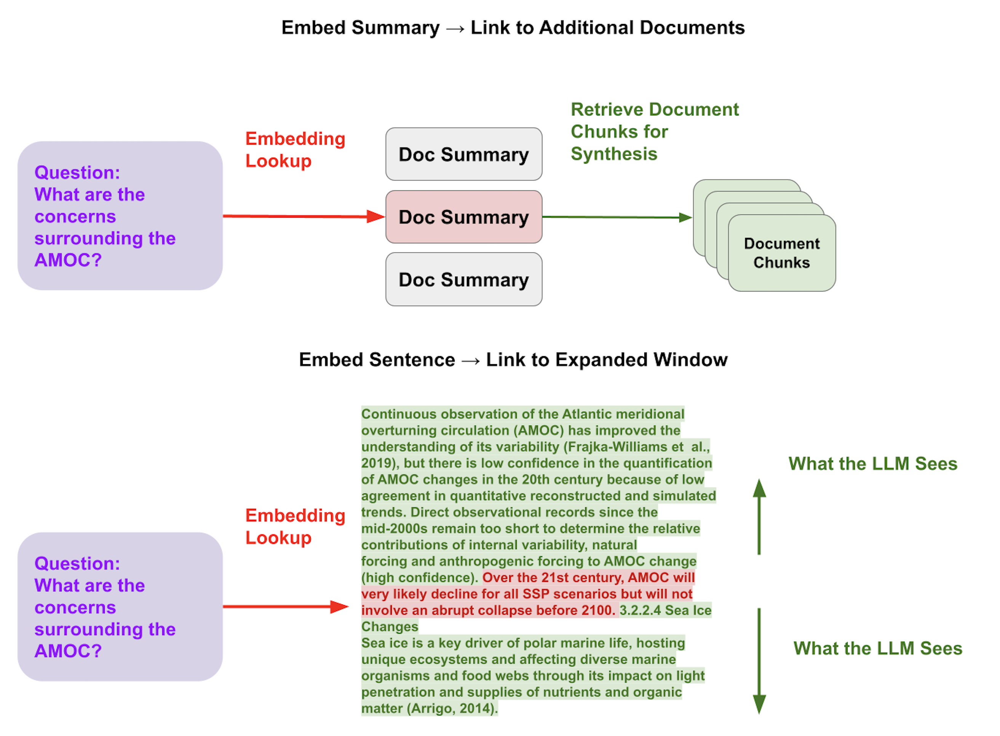
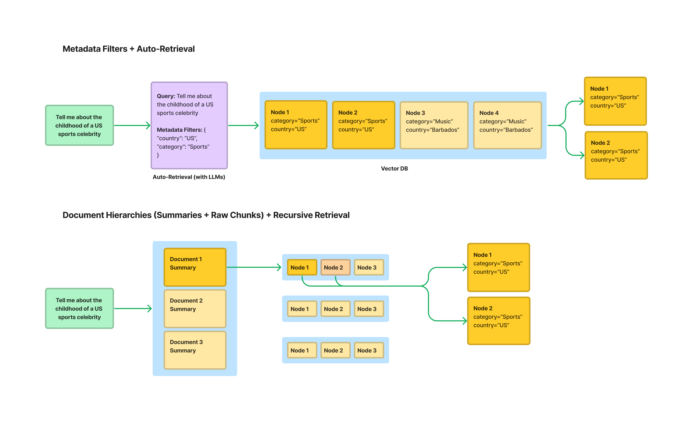
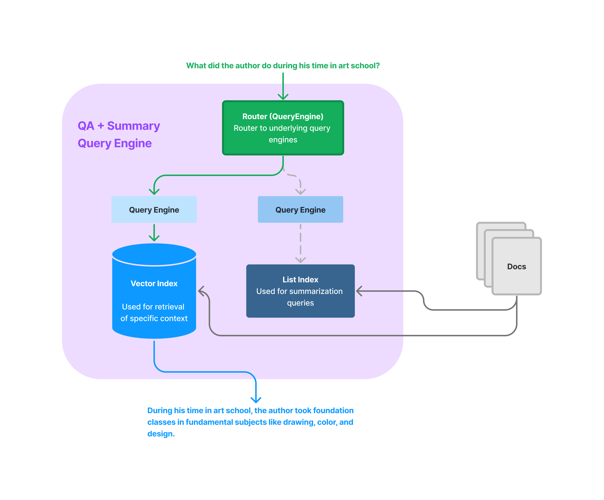

构建高性能生产级 RAG 应用#
原型化一个 RAG 应用很容易，但要使其高性能、健壮并能扩展到大规模知识库却很难。
本指南包含各种提升 RAG 工作流性能的技巧。我们首先概述一些通用技术——这些技术大致按从最直接到最具挑战性的顺序排列。然后我们会更深入地探讨每种技术、它解决的用例场景，以及如何在 LlamaIndex 中实现！
最终目标是优化检索和生成性能，使其能准确回答更复杂的数据集上的更多查询，且不产生幻觉。
构建生产级 RAG 的通用技术#
以下是构建生产级 RAG 的主要考量点：
- 分离用于检索的文本块与用于合成的文本块
- 针对大型文档集的结构化检索
- 根据任务动态检索文本块
- 优化上下文嵌入
我们在生产级 RAG 网络研讨会中讨论了这些内容。查看这条推文串获取更多综合细节。
分离检索用文本块与合成用文本块#
提升检索效果的关键技术是将用于检索的文本块与用于合成的文本块分离。

动机#
用于检索的最佳文本块表示可能与用于合成的最佳考量不同。例如，原始文本块可能包含 LLM 合成详细答案所需的细节，但它可能包含会影响嵌入表示的填充词/信息，或者缺乏全局上下文，导致相关查询出现时根本检索不到。
关键技术#
有两种主要方法可以利用这个思路：
1. 嵌入文档摘要，链接到与该文档关联的文本块。
这有助于先在高层次检索相关文档，再检索文本块，而不是直接检索可能位于无关文档中的文本块。
资源：
2. 嵌入句子，然后链接到该句子周围的窗口。
这允许更细粒度的相关上下文检索（嵌入大文本块会导致"迷失在中间"问题），同时确保 LLM 合成时有足够的上下文。
资源：
针对大型文档集的结构化检索#

动机#
标准 RAG 堆栈（top-k 检索 + 基础文本分割）的一个大问题是，随着文档数量增加（例如有 100 个不同的 PDF 时）效果不佳。在这种情况下，给定查询时，你可能希望使用结构化信息来帮助更精确地检索；例如，如果问题只与两个 PDF 相关，使用结构化信息确保这两个 PDF 被返回，而不仅仅是基于文本块的原始嵌入相似度。
关键技术#
有几种方法可以为生产级 RAG 系统执行更结构化的标记/检索，各有优缺点。
1. 元数据过滤器 + 自动检索 为每个文档标记元数据并存储在向量数据库中。在推理时，使用 LLM 推断正确的元数据过滤器，结合语义查询字符串查询向量数据库。
- 优点 ✅：主流向量数据库支持。可通过多个维度过滤文档。
- 缺点 🚫：难以定义正确的标签。标签可能不包含足够信息以实现更精确检索。标签代表文档级关键词搜索，不支持语义查找。
资源： 2. 存储文档层次结构（摘要 -> 原始文本块）+ 递归检索 嵌入文档摘要并映射到每个文档的文本块。先在文档级获取，再到文本块级。
- 优点 ✅：允许文档级语义查找。
- 缺点 🚫：不支持通过结构化标签进行关键词查找（可能比语义搜索更精确）。自动生成摘要可能成本高。
资源
根据任务动态检索文本块#

动机#
RAG 不仅涉及针对特定事实的问答（这是 top-k 相似度优化的场景）。用户可能提出各种查询。原生 RAG 堆栈处理的查询包括询问特定事实的查询，例如"告诉我该公司 2023 年的 D&I 举措"或"叙述者在谷歌期间做了什么"。但查询也可能包括摘要，例如"能给我这份文档的高层概述吗"，或比较"能比较/对比 X 和 Y 吗"。所有这些用例可能需要不同的检索技术。
关键技术#
LlamaIndex 提供了一些核心抽象模块来帮助您实现特定任务的检索功能。这包括我们的路由模块以及数据代理模块。此外还包含一些高级查询引擎模块，以及其他实现结构化与非结构化数据联合查询的模块。
您可以使用这些模块实现联合问答与摘要生成，甚至将结构化查询与非结构化查询相结合。
核心模块资源
详细指南资源
优化上下文嵌入#
动机#
这与前文"解耦检索块与合成块"中描述的动机相关。我们需要确保嵌入向量针对特定数据语料库进行了检索优化。预训练模型可能无法捕捉与您用例相关的数据关键特征。
关键技术#
除了上述列出的技术外，我们还可以尝试微调嵌入模型。实际上，我们可以在无标签的情况下对非结构化文本语料库进行这种微调。
参考我们的指南：